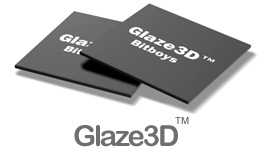

|
|
| 当前位置：电脑报电子版 > 1999 年 > 34 期 > 硬件周刊 > 神密高手Glave 3D |
| 《 神密高手Glave 3D 》 |
何为Glaze 3D 对3D图形加速芯片了解较深的朋友，大概或多或少都听说过Glaze 3D这个名字。去年年中，Bitboys公司就曾经预发布过一次Glaze 3D芯片的惊人规划——4倍于Voodoo 2的性能，还可以SLI(隔行扫描工作方式)方式工作，在当时来说真是不可想象，大家都盘算着：要是Glaze 3D一出现，3dfx和nVidia等公司该怎么办？只可惜那时的Glaze 3D还只是个纸面上的东西。一年的时间就在Bitboys不断重复着“快要完成了”之类的套话中不知不觉过去了，最后终于在8月2日正式发布了Glaze 1200/2400系列。抢在在这个节骨眼上发布，其实也不难理解——很快nVidia的NV10（TNT 3）和3dfx的Napalm（Voodoo 4）就要公布了，如果Glaze 3D再不抢到这个“先手”，恐怕就真的要从人们心目中的领先地位跌到落后于时代的窘境，那可是难有出头之日了。 尽管Bitboys公布的上市时间是明年一二季度，实际上比TNT 3和Voodoo 4都要晚，但这次Glaze 3D已经是试验中的芯片，Bitboys又吸取了教训，采用新工艺自行制造芯片，技术指标还向上提高了不少：Glaze 3D 1200集成有9MB显示内存，图素填充率达12亿/秒（Voodoo 3 3500相比之下只有3.66亿/秒），三角形处理速度达1500万/秒（TNT 2为800万/秒）；Glaze 3D 2400是两块1200芯片并行处理，所有数据都要加倍！所以Glaze 3D依旧保持了在人们心目中的高大形象——那个看不见的巨人、隐身的对手，只要还未现身，它就始终是“无法战胜”的。 Glaze 3D有什么特点 从技术上来说，Glaze 3D的优点真是很多，根据现有的数据资料，Glaze 3D几乎在3D图形加速芯片的所有方面都有着领先的性能。9MB嵌入式显示内存是Glaze 3D最突出的卖点。这些内存实际是72Mbit，其接口宽度达到512位，运行在150MHz下时带宽就有9.6GB/s，再加上容量可达128MB的128位接口的外接显示内存在150MHz时的2.4GB/s带宽，每片Glaze 3D 1200共有12GB/s的带宽。我们知道，现有的3D芯片体系结构要向前发展，最大的障碍就是系统带宽难以大幅度提高，其中接口总线升级到AGP 4×算是一个飞跃，而显存接口的位数和频率却最终制约着本地内存带宽的提高。像NEC/Videologic的PowerVR系列那样尽量少用、甚至不用显示内存固然是一个办法，但因为系统结构有了重大的变化，无法保持完全的向下兼容。要维持传统的3D硬件体系，使用高接口位数的嵌入式内存作为帧缓存以及纹理缓存就是最主要的解决方案了：远的有千呼万唤不出来的Rendition V4400E（E就表示embeded，嵌入式）；近的有Pixel Fusion的集成了3MB显存的工作站级芯片Fuzion 150，SONY的PS2家用游戏机的显示部分肯定也会使用类似的技术。有了9MB嵌入式显示内存的帮助，Glaze 3D在保持传统架构和完全兼容性的基础上，达到了惊人的高性能。为了能够集成高达9MB的内存，Glaze 3D使用Infineon公司的0.20微米嵌入式DRAM工艺生产。而且，相对于主流3D芯片的0.25微米制造工艺，Glaze 3D应该能够达到更高的时钟频率。 极高的速度是Glaze 3D赖以生存的法宝。结构上Glaze 3D有1个1500万三角形/秒的三角形设置引擎，4条并行的双纹理贴图流水线，以及2个共24KB的纹理cache能够在每个时钟周期内向这些流水线送出32个纹理色彩数据，最后还有2级半透明色彩混合区段，而且所有的操作都是在单周期内完成的。正是由于有了这样惊人的结构，Glaze 3D每周期能够处理8个图素（texel），在比较保守的150MHz工作时就相当于12亿图素/秒，可以理解为每秒1.5亿个三线性过滤、4层纹理的像素点，直观地说就是在Quake 3 Arena中将所有设置都升到顶也会有约200帧/秒的速度（当然还得有足够强大的CPU），对比现有显示卡的最多每秒不到2亿个二线性过滤、2层纹理的像素，真是不小的进步。 更惊人的是Glaze 3D的并行处理功能。如果Glaze 3D 1200的性能不够，那么2块芯片、双倍性能的Glaze 3D 2400芯片组应该够用了吧？还不够，还有4块芯片、4倍性能的Glaze 3D 4800芯片组……Glaze 3D的这种扩展方式创造性地发展了Voodoo 2当年的SLI功能，并且由于Glaze 3D芯片使用的是Bitboys专有的并行光栅化技术，既不需要Voodoo 2那样的隔行扫描操作（SLI），也不必像MetaBytes的并行Riva TNT技术那样分割屏幕，另外因为多芯片是预备装在同一块显示卡上的，所以AGP带宽也不必分出一部分来用于并行处理。Glaze 3D的并行处理功能有着极大的灵活性，因为Bitboys不必重新设计芯片就可以轻易地将性能提高到2倍甚至4倍，这可真是一着经过深思熟虑的“好棋”——尽管芯片组的性价比不如单芯片，但在芯片随着制造工艺的提高成本不断降低时，这种方式在时间和技术上都是极好的权宜之计，比较容易更为平滑地过渡到新一代产品（其实当年的Voodoo 2芯片组又何尝不是如此）。还需补充的是，每片Glaze 3D芯片都有自己的集成RAMDAC，并不会因为并行使用就外置DAC以避免重复，实际上这说明Bitboys还是打算以Glaze 3D 1200为主力，并且相信1200M图素/秒的性能暂时足够了。 Glaze 3D还有很多引人注目的特性，如：32位真彩渲染，32位真彩纹理，三线性MIP贴图，环境凹凸贴图，高达2048×1536的分辨率，全屏幕独立顺序的抗锯齿过滤，高质量的4∶1纹理压缩，完全的AGP 4×支持（包括直接AGP纹理贴图），积层缓存（accumulation buffer）效果（3dfx最近大肆宣传的T－Buffer技术就是积层缓存的一种），多种标准的视频输出，数字平板显示器支持。2D加速部分完全支持GDI＋标准、速度达6亿像素/秒等等。 在软件方面，Glaze 3D支持Win 95/98/NT4/2000；Glaze 3D可以使用DirectX 7.0、OpenGL 1.2，以及将来它们“二合一”后的Fahrenheit（见本期第9版），Glaze 3D不但支持DirectX 7.0和OpenGL 1.2中那些复杂的半透明混合模式，甚至还支持很多另外的混合模式（要知道，多种多样的混合模式可是漂亮的3D图形的一个重要因素）。看起来很难找出Glaze 3D还缺些什么，真是“万事俱备，只欠东风”。 Glaze 3D有哪些弱点 讲到这里，似乎Glaze 3D全是优点，其实Glaze 3D的弱点也不算太少，这就是为什么大家并未一致看好它的原因。首先，一个新产品需要业界广泛的支持才能够生存。由于Bitboys还没有拿出令人信服的工程样片，所以至今还没有任何显示卡或主板生产商会贸然宣布支持Glaze 3D，这一点必须要到试产开始时才会清楚。软件厂商的支持也很重要，好在现在大多数游戏都使用Direct 3D和OpenGL这两种通用型API，只要Glaze 3D没有性能和兼容性方面的问题，在任何新游戏中都能发挥出应有的威力。尽管说“是金子总会发光”，但推广一个新生事物所需的财力与时间都是不容忽视的问题。 同样重要的是，从这一代3D图形加速芯片开始，各公司拼的就已经是时钟频率了，也就是生产工艺水平，然而一间高水准的大规模集成电路工厂简直就是用黄金堆砌而成的。我们还不清楚Bitboys买入了Infineon 的0.20微米生产工艺后，要如何“自行”生产Glaze 3D芯片。但有一点很明显，如果生产水准较差，会造成成品率较低而导致价格高昂，或者时钟频率上不去而导致性能下降——这种例子我们已经看得够多了。另外，到Glaze 3D上市时很可能其他公司已经转向0.18微米工艺，Bitboys的0.20微米工艺也会略微落后。 时间也是很难忽略的因素，尽管Glaze 3D是8月初发布的，但要到明年一季度才会量产芯片，到明年2季度相应的显示卡才会大批上市。在这之前，TNT 3和Voodoo 4都会在年底抢先加入战团，其他公司的产品最迟在明年年初也都要更新，Glaze 3D相应要比新一代产品晚上一个季度甚至半年，是否还能抢到足够的市场占有率真是只有天知道。 几何加速（即T＆L）功能也是问题，因为已知TNT 3会集成T＆L部分，而Voodoo 4据说打算另配一片全新的T＆L加速芯片，其他厂家也在考虑这个问题。Bitboys认为Glaze 3D的几何设置引擎足够强大，也可以作为T＆L加速使用，但将在Glaze 3D之后推出的几何加速芯片将是更为完善、高速的产品。 我们现在对Glaze 3D及其目标市场的了解和估计还不够，还不足以对其前途作出任何决定性的预测。但至少我们可以知道：在nVidia和3dfx的产品之外，又多了一位强大的对手竞争新一代3D图形加速芯片的王座，它很可能会使S3、ATI、Matrox等公司的产品感到新的威胁。 可能你是一口气看到这里的，或者早已了解上述内容，请一定多多指正，还希望了解即时3D新闻和阅读3D旧作的朋友，请访问：http:∥abs3d.webprovider.com。 (朱云) |
| 下载本期推荐软件 | 页 首 |
| 《电脑报》版权所有，电脑报网站编辑部设计制作发布 |